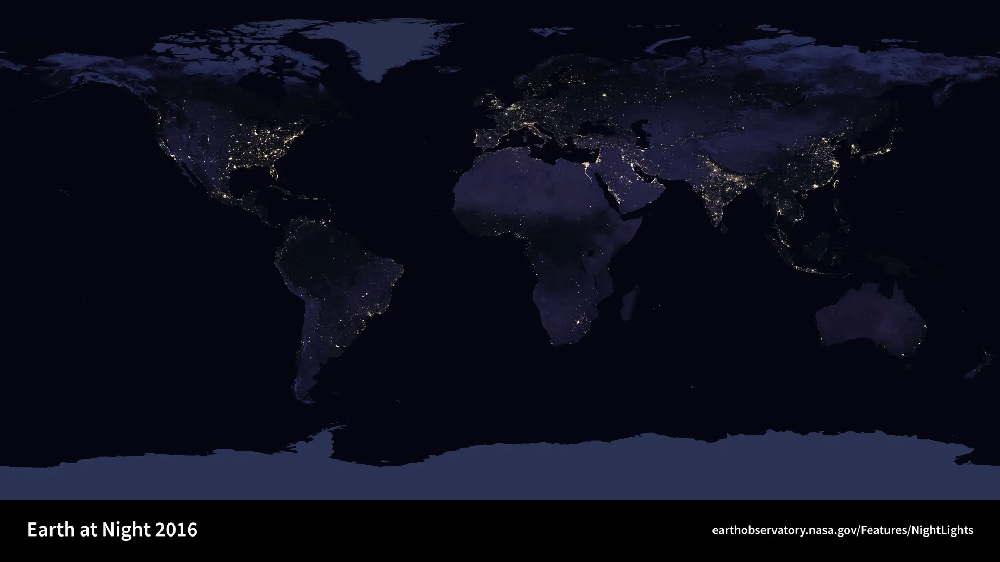

Nessuna ipotesi registrata.
25 · Arte digitale e IA
Chi sta
guardando?
Non chiederti ancora che cosa rappresenta. Interroga il modo in cui questa immagine è diventata visibile.
Inizia dall’incertezza ↓
Dato o interpretazione?
Scegli un marcatore. Descrivi ciò che è visibile prima di attribuirgli una causa.
01 · Prima decisione
Che tipo di
immagine è?
Una classificazione provvisoria è utile soltanto se resta correggibile.
Chi o che cosa l’ha realizzata?
02 · Genealogie
L’algoritmo viene
prima dell’IA.
La storia non conduce inevitabilmente al modello generativo: procedure, segnali, regole, reti e interazioni aprono traiettorie differenti.
Scegli un nodo: ogni passaggio apre una possibilità e conserva un limite.
Modifica una regola e osserva che cosa resta sotto controllo.
03 · Infrastrutture
Il digitale
ha un corpo.
“Cloud” è una metafora comoda. Un’opera digitale attraversa materia, energia, logistica, lavoro e manutenzione.
opera / servizio
Attiva gli strati per smontare l’idea di immaterialità. Non viene calcolato un falso “costo per immagine”: contesto, hardware, modello, carico e mix energetico cambiano il risultato.
Kate Crawford e Vladan Joler ricostruiscono risorse planetarie, catene logistiche, dati e lavoro dietro un singolo assistente domestico.
Apri il progetto ↗L’ILO documenta raccolta, annotazione e moderazione come lavoro umano incorporato nei sistemi automatizzati.
Leggi l’ILO ↗L’IEA distingue crescita dei data center, efficienza, localizzazione e mix elettrico. I numeri vanno contestualizzati, non usati come slogan.
Dati IEA 2026 ↗04 · Dall’immagine al sistema
Dove finisce
l’opera?
Un file può essere una parte, non l’intero. Input, codice, esecuzione e interfaccia producono relazioni che il solo output non conserva.
Seleziona i componenti che ritieni indispensabili per riallestire un’opera interattiva.
Scegli un caso: la scheda è testuale perché le opere protette non sono incorporate.
05 · Quando la rete è il medium
Essere online non basta
per essere Net Art.
La rete può distribuire un’immagine oppure costituire la struttura dell’opera: link, protocolli, server, partecipanti e tempo condiviso.
Classifica un caso per distinguere digitalizzazione, arte digitale e Net Art.
Browser 1996 → oggi
Il plug-in non esiste più. Che cosa preservi?
Scegli fino a tre strategie. Nessuna conserva tutto.
La conservazione è una negoziazione documentata fra comportamento, aspetto, contesto e accesso.
06 · Centro concettuale
Lo sguardo algoritmico
ordina prima di capire.
Misurare, classificare, riconoscere, raccomandare e comprendere non sono cinque nomi della stessa operazione.
vedere ricevere segnalimisurare produrre valoriclassificare assegnare categoriericonoscere associare patterncomprendere costruire senso situato
07 · Il dataset
Il sistema vede
ciò che abbiamo reso visibile.
Raccolta, categorie e casi mancanti costruiscono il campo del riconoscibile prima che il modello produca un risultato.
1. Costruisci un piccolo insieme
Aggiungi forme astratte: i metadati sono fittizi e dichiarati.
2. Etichetta i casi ambigui
3. Cerca ciò che manca
Costruisci, etichetta e poi controlla le assenze.
Diecimila fotografie scattate e classificate a mano rendono visibile il lavoro che solitamente precede l’apprendimento automatico.
Ars Electronica ↗Joy Buolamwini e Timnit Gebru mostrano che prestazioni aggregate possono nascondere differenze fra gruppi e condizioni d’uso.
MIT Media Lab ↗08 · Generazione
Il prompt non contiene
tutta l’immagine.
Training e inferenza sono fasi diverse. Dataset, pesi, filtri, interfaccia, parametri, seed e selezione distribuiscono il controllo.
Attiva i nodi che incidono sull’esito. La parola “IA” non deve cancellare la catena.
Stesso prompt non significa necessariamente stesso esito; stesso seed e stessi vincoli rendono invece l’esecuzione riproducibile in questo laboratorio.
09 · Autorialità
L’autore non scompare.
Si distribuisce.
Distribuire non significa rendere tutti equivalenti. Intenzione, lavoro, controllo, firma, rischio e ricavo seguono traiettorie diverse.
Cohen descrive un rapporto collaborativo, ma programma, ricostruzioni, plotter e selezione mantengono responsabilità differenti.
Whitney ↗I crediti di Tavoli distinguono ideazione, regia, fotografia, montaggio, sistemi interattivi, performer, suono e costruzione materiale.
Archivio ufficiale ↗Una firma collettiva riunisce discipline diverse; “collettivo” non deve trasformare il lavoro in un fondale anonimo.
Biografia ufficiale ↗10 · Originale digitale
Un originale può avere
molte istanze.
File, versione, edizione, esecuzione, certificato, token, licenza e accesso non sono sinonimi.
Scegli uno scenario per identificare che cosa viene posseduto, eseguito o autorizzato.
Tokenregistrazione in un sistema distribuito
Filesequenza di dati conservata in un supporto
Contrattodefinisce diritti e obblighi fra parti
Copyrightdiritti stabiliti dalla legge applicabile
Provenienzastoria documentata di passaggi e trasformazioni
La blockchain può registrare una dichiarazione; non garantisce che la dichiarazione iniziale sia vera, che il file remoto duri o che il copyright sia stato trasferito.
11 · Piattaforme
Il feed non mostra il mondo.
Costruisce una priorità.
“Personalizzato” significa che criteri, dati e obiettivi ordinano la visibilità. Qualcuno sale; qualcun altro scompare.
Ordina contenuti secondo obiettivi traducibili in segnali.
Durata, proporzione e ritmo favoriti influenzano ciò che viene prodotto.
Regole e applicazione decidono accesso, rimozione e possibilità di ricorso.
API, condizioni d’uso e chiusura del servizio possono cambiare l’opera.
12 · Potere e futuro
La responsabilità non può
sciogliersi nella rete.
Ogni possibilità tecnica incorpora scelte. Legge, etica, contestazione e progettazione responsabile restano piani connessi ma distinti.
Quadro verificato · 22 agosto 2026
Che cosa è già applicabile?
Nell’Unione europea l’AI Act è applicabile dal 2 agosto 2026 con eccezioni e scadenze differenziate; l’articolo 50 introduce obblighi di trasparenza per specifici contenuti e interazioni. Le regole per i modelli general-purpose sono applicabili dal 2 agosto 2025 e includono politica sul copyright e sintesi pubblica dei contenuti di addestramento. Non è una legge universale.
Progetta un sistema responsabile
Per ogni area scegli una posizione. Le scelte sono salvate e formeranno il resoconto.
Un progetto responsabile deve dichiarare anche chi può contestarlo.
Provenienza non significa verità automatica
Costruisci una catena: acquisizione, trasformazioni e dichiarazioni possono essere registrate, ma vanno interpretate.
Errore, distribuzione dei dati e progetto istituzionale vanno separati.
Riconoscere pattern può diventare controllo di persone e comportamenti.
Provenienza e marcatura aiutano, ma non sostituiscono contesto e giudizio.
Modello, hardware, durata, localizzazione, energia e riuso modificano l’impatto.
“Open” può riguardare codice, pesi, dati o licenza: va specificato.
Una decisione contestabile distribuisce il potere diversamente da una scatola chiusa.
13 · Seconda decisione
Chi ha
guardato?
La rivelazione non sostituisce un’etichetta con un’altra: ricostruisce una catena di apparati e decisioni.
NASA · Black Marble 2016
Non una singola
fotografia.
È una vista globale cloud-free costruita con dati del sensore VIIRS sul satellite Suomi NPP. Ogni pixel rappresenta circa 742 metri. I dati notturni vengono selezionati ed elaborati per ridurre nuvole e altri disturbi e rendere confrontabili le luci.
- Apparato
- Satellite Suomi NPP · sensore VIIRS
- Ricerca
- Miguel Román · NASA/GSFC
- Elaborazione
- Joshua Stevens · SSAI
- Credito
- NASA Goddard Space Flight Center
- Rende visibile
- Distribuzione persistente delle luci notturne
- Non mostra da sola
- Cause, accesso all’energia, disuguaglianze, fenomeni rimossi dal composito
La tua prima decisione
Non hai ancora formulato una prima ipotesi.
Tavolo finale dello sguardo algoritmico
Distribuisci al massimo 100 punti di potere/responsabilità. Un totale inferiore a 100 è ammesso: può rappresentare incertezza.
0 / 100 punti distribuiti.
Atlante personale
Attiva soltanto le categorie che hai effettivamente messo in relazione durante il percorso.
Nessuna categoria ancora scelta.
Sintesi dalle sole azioni
Non inventa
ciò che non hai fatto.
Esplora il modulo per costruire una sintesi personale verificabile.
Verifica finale · 16 nuclei
Distinguere
per comprendere.
0 / 16 compresi
16 / 16
Tutti i nuclei sono stati compresi, direttamente o attraverso il recupero.
Lo sguardo algoritmico non appartiene a una macchina isolata: nasce da una rete sociotecnica diseguale. L’autorialità può distribuirsi; la responsabilità no.
Il percorso si chiude senza finire